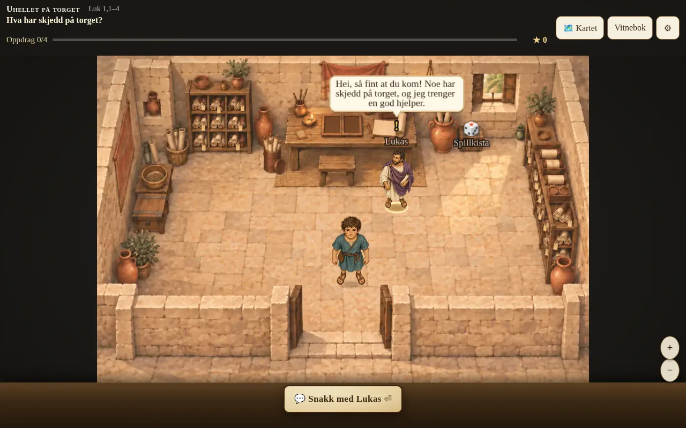
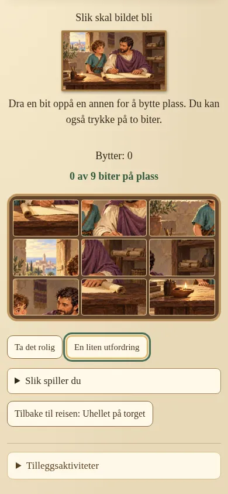
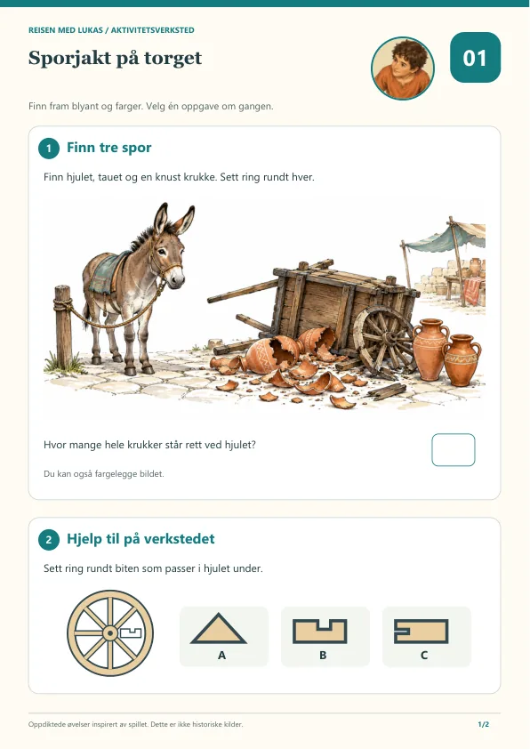
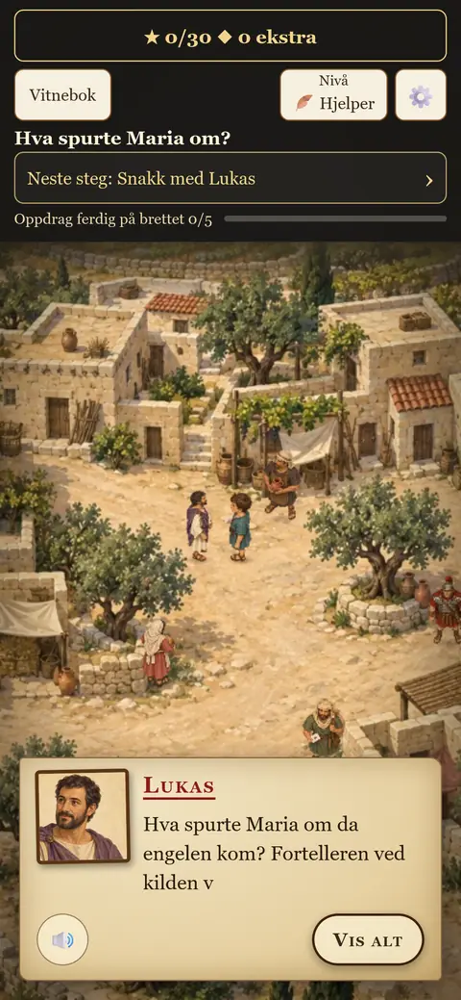
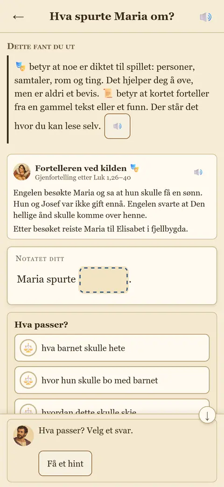
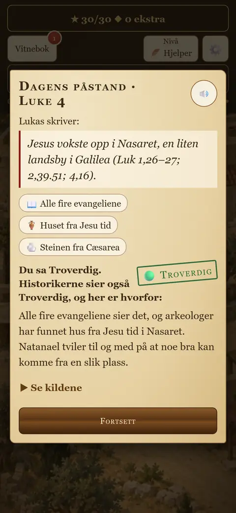
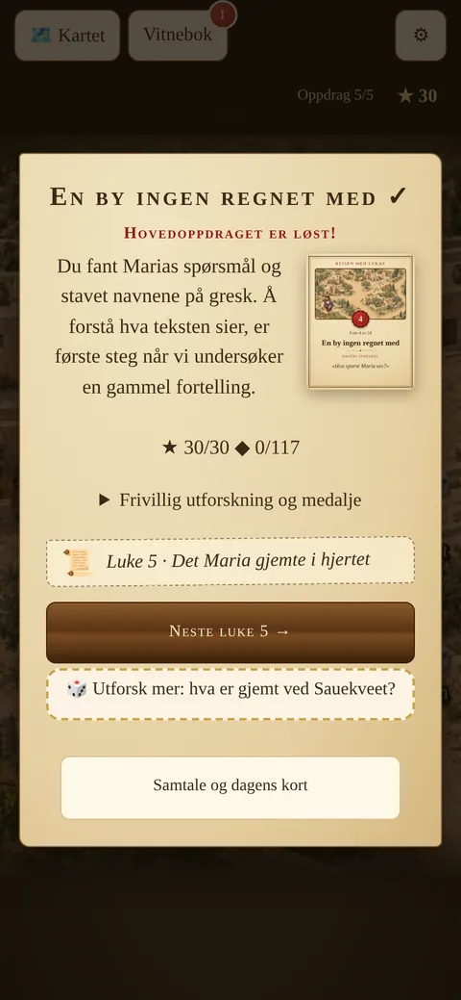

Spillbrett å gå rundt på
Malte steder fra Nasaret til Betlehem. Barnet går rundt, snakker med folk og samler spor sammen med Lukas.
Reisen med Lukas
Julekalender på nett · 1.–24. desember
Bli lærlingen til legen Lukas, gå rundt i landet der Jesus levde, snakk med folk som var der og samle fortellingene i vitneboka. Fra 8 år. Godt å spille sammen med foreldre eller besteforeldre.
Denne iPaden eller iPhonen kan ikke spille Reisen med Lukas (krever iOS 16.4 eller nyere). Kjøp bare hvis barnet skal spille på en annen enhet.
Familiekode for hele husstanden: 500 kr. Engangskjøp, ingen abonnement.
Hver luke er en liten sak å løse. Dagens oppdrag tar vanligvis 5–15 minutter, og den som vil mer, kan bli lenger.

Malte steder fra Nasaret til Betlehem. Barnet går rundt, snakker med folk og samler spor sammen med Lukas.

Puslespill og små oppgaver gir pauser i fortellingen og belønner dem som følger med.

Ark til utskrift for hver dag: let etter ord, løs koder, finn forskjeller og snakk sammen om dagens fortelling.




Dere betaler én gang for koden, og så er det ferdig. Inne i spillet finnes det ingen butikk, ingen mynter å kjøpe og ingen tilbud som dukker opp. Det er ingen konto og ingen innlogging, og framgangen lagres bare på enheten dere spiller på.
«Bestefar, er det som står i Bibelen sant?» Introfilmen viser hvordan reisen begynner: Gutten spør, bestefar svarer, og så får barnet bli med Lukas og undersøke selv. Filmen er frivillig og passer fint å se sammen før luke 1.
En fin adventsgave til barnebarn, gudbarn eller nabobarnet. Koden står på gavekortet, og QR-koden på kortet fører til reisenmedlukas.no.
Etter kjøpet kan du laste ned et gavekort som PDF med koden ferdig påtrykt. Du kan skrive navnet til den som skal få det.
Kjøp og last nedGavekort med personlig kode til 250 kr kan også kjøpes i butikken hos Ordet è Ditt. Familiekoden kjøpes bare her på nettsiden.
Denne iPaden eller iPhonen kan ikke spille Reisen med Lukas (krever iOS 16.4 eller nyere). Kjøp bare hvis barnet skal spille på en annen enhet.
Aktivitetsark til utskrift for hver dag, gratis for alle.
Gratis
250 kr
500 kr
Betal med bankoverføring. Dere får koden med en gang, og den kommer også på e-post.
Lukene åpner på sin dag i desember, og etter julaften er alle åpne. Spillet er åpent minst til og med 31. januar 2027. Angrerett og refusjon: se kjøpsvilkårene. Hva vi lagrer ved kjøp, står i personvernerklæringen.
Ja. Luke 1 er åpen for alle, uten konto og uten e-post. Da kan dere prøve spillet før dere bestemmer dere.
Koden låser opp luke 2–24. Lukene åpner på sin dag i desember, og etter julaften er alle åpne. Spillet er åpent minst til og med 31. januar 2027. Det er et engangskjøp: ingen abonnement og ingen kjøp inne i spillet.
En personlig kode (250 kr) er for én person. En familiekode (500 kr) er for hele husstanden, altså alle som bor i samme hus, og kan tastes inn på alle enhetene dere har hjemme.
Start en luke og trykk på tannhjulet ⚙. Åpne «Mer» og trykk «Jeg har en kode». Skriv inn koden og trykk «Lås opp».
Betal med bankoverføring. Dere får koden med en gang, og den kommer også på e-post.
Spillet passer fra 8 år. Yngre barn kan være med sammen med en voksen eller et eldre søsken, og alle kort kan leses høyt.
Ja. Spillet kjører i nettleseren på telefon, nettbrett og PC, uten at noe må installeres. En ny luke trenger nett første gang den åpnes. Etter det kan den spilles uten nett på samme enhet. På iPhone og iPad trengs iOS 16.4 eller nyere.
Da er lukene fram til og med dagens dato åpne med en gang, og så åpner en ny luke hver dag fram til julaften. Barnet kan ta igjen dagene når det passer.
Ja, men spillet har ingen profiler, så søsken som deler enhet, deler også framgangen. Vil hvert barn ha sin egen reise, kan de bruke hver sin enhet eller nettleser.
Se kjøpsvilkårene.
Spillet er laget på kristent grunnlag og tar Bibelen på alvor. Samtidig øver det på noe alle har nytte av: å stille gode spørsmål og prøve det man hører. Alle er velkomne til å være med.
E-post: lihai260 (krøllalfa) hotmail.com
Vi svarer så fort vi kan. Ikke send kortnummer eller BankID-opplysninger på e-post.